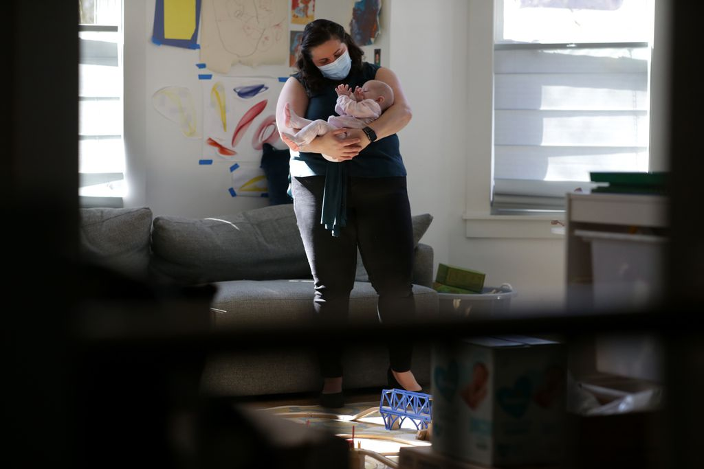

For those frustrated with vaccine system, a crew of volunteers is ready to help
As the scramble for scarce vaccines intensifies, a band of volunteers has stepped in to accomplish the task that has defeated so many: making an appointment to get a COVID-19 shot. Massachusetts COVID Vaccination Help, as this posse of mostly young women is called, launched on Feb. 20, and claims to have landed appointments for 450 people as of Monday, through a combination of technological know-how and persistence. And they did it all for free.